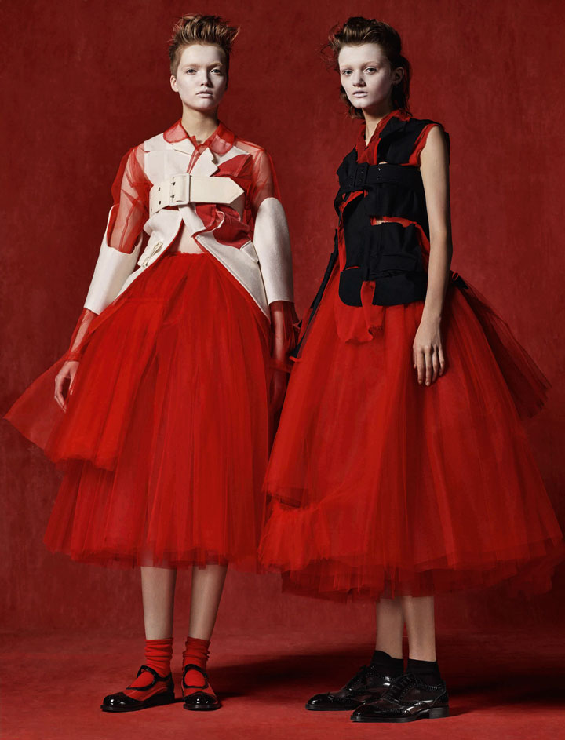

Rei Kawakubo /
The Art of the In-Between
Exhibitions are free with museum admissions*
At The Met Fifth Avenue
May 4th - September 4th, 2017
C
O
M
M
E
D
E
S
G
ARÇON
The Costume Institute's spring 2017 exhibition examines the work of fashion designer Rei Kawakubo, known for her avant-garde designs and ability to challenge conventional notions of beauty, good taste, and fashionability. The thematic show features approximately 140 examples of Kawakubo's womenswear for Comme des Garçons dating from the early 1980s to her most recent collection, many with heads and wigs created and styled by Julien d'Ys.
The galleries illustrate the designer's revolutionary experiments in "in-betweenness"—the space between boundaries. Objects are organized into nine aesthetic expressions of interstitiality in Kawakubo's work: Absence/Presence, Design/Not Design, Fashion/Anti-Fashion, Model/Multiple, Then/Now, High/Low, Self/Other, Object/Subject, and Clothes/Not Clothes. Kawakubo breaks down the imaginary walls between these dualisms, exposing their artificiality and arbitrariness.
Exhibition Overview
Gallery views of The Costume Institute's spring 2017 exhibition, Rei Kawakubo/Comme des Garçons: Art of the In-Between, narrated by exhibition curator Andrew Bolton.
Exhibition Gallery
Since founding Comme des Garçons ("like some boys") in 1969, the Tokyo-based designer Rei Kawakubo (born 1942) has consistently defined and redefined the aesthetics of our time. Season after season, collection after collection, she upends conventional notions of beauty and disrupts accepted characteristics of the fashionable body. Her fashions not only stand apart from the genealogy of clothing but also resist definition and confound interpretation. They can be read as Zen koans or riddles devised to baffle, bemuse, and bewilder. At the heart of her work are the koan mu (emptiness) and the related notion of ma (space), which coexist in the concept of the "in-between." This reveals itself as an aesthetic sensibility that establishes an unsettling zone of visual ambiguity and elusiveness.
Rei Kawakubo/Comme des Garçons: Art of the In-Between examines nine expressions of "in-betweenness" in Kawakubo's collections: Absence/Presence; Design/Not Design; Fashion/ Antifashion; Model/Multiple; High/Low; Then/Now; Self/ Other; Object/Subject; and Clothes/Not Clothes. It reveals how her designs occupy the spaces between these dualities—which have come to be seen as natural rather than social or cultural—and how they resolve and dissolve binary logic. Defying easy classification themselves, her clothes expose the artificiality, arbitrariness, and "emptiness" of conventional dichotomies. Kawakubo's art of the "in-between" generates meaningful mediations and connections as well as revolutionary innovations and transformations, offering endless possibilities for creation and re-creation.
